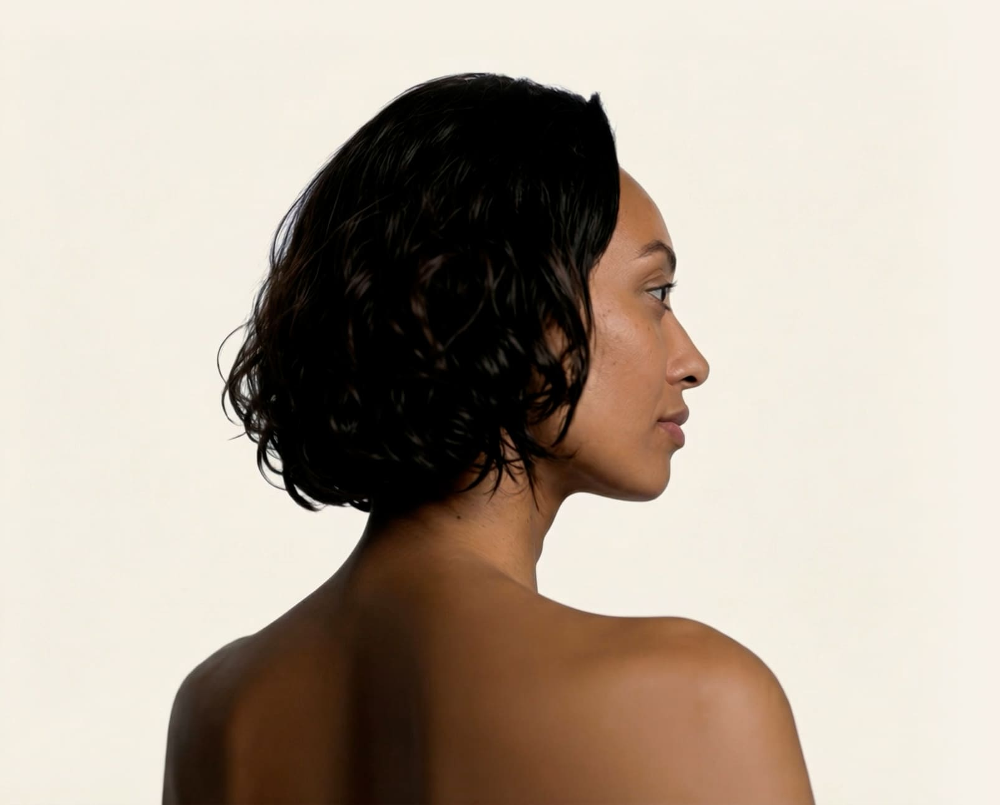

Inteligência artificial para sua pele
Assistente de skincare com 30 dias grátis
Preencha o prontuário, passe pelo scanner e receba
um protocolo de cuidado com a pele personalizado.
+00.000 rostos analisados com mais de 96% de precisão
Como funciona
Você não tem uma pele com problemas.
Só não sabe que cosmético usar.
Algumas perguntas rápidas sobre sua pele, sua rotina e seu histórico. Isso vai levar menos de 6 minutos.
A partir do scanner facial inteligente, nossa IA é capaz de analisar mais de 11 critérios e 7 fatores da sua pele.
Um protocolo 100% personalizado com cuidados e produtos ideais para sua pele, sua vida e seu bolso.
Nossa IA foi treinada com um banco de dados de mais de 8,3 milhões de arquivos entre artigos de dermatologia, publicações científicas, opiniões de especialistas, fóruns de skincare, guias de cosméticos, etc.
Ela não dá um palpite. Ela executa o conhecimento que absorveu durante o treinamento.
O que você ganha
Não é um quiz genérico. Nossa IA analisa as fotos do seu rosto e identifica condições que você talvez nem saiba que tem.
A cada mês você reenvia as fotos e vê sua pele evoluir — com comparativo visual e ajuste automático da rotina.
Indicamos o produto certo para você — não o produto que nos paga para indicar. Nossa curadoria é baseada em composição, eficácia e compatibilidade com o seu perfil.
Depoimentos
"Em 3 semanas minha zona T melhorou mais do que em dois anos testando produtos sozinha."
"Gastei tanto dinheiro em produtos caros que não funcionavam. A dermind me indicou o que realmente faz diferença."
"O diagnóstico foi tão preciso que parecia que a IA conhecia minha pele melhor do que eu."
Planos
Mensal
Cancele quando quiser. Sem fidelidade.
🔒 7 dias grátis — cobrança só depois. Sem cartão obrigatório para testar.
Trimestral
Cobrado trimestralmente. Cancele quando quiser.
🔒 30 dias grátis — cobrança só depois. Sem cartão obrigatório para testar.
Dúvidas frequentes
Diagnóstico personalizado. Rotina sob medida. Evolução mês a mês.
Começar agoraDiagnóstico personalizado. Rotina sob medida. Evolução mês a mês.
Começar agora